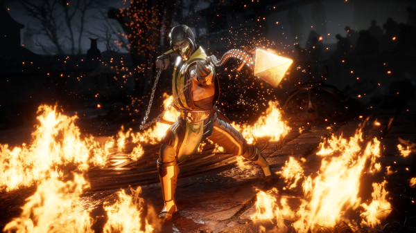
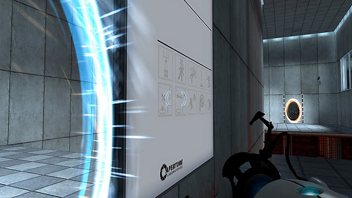
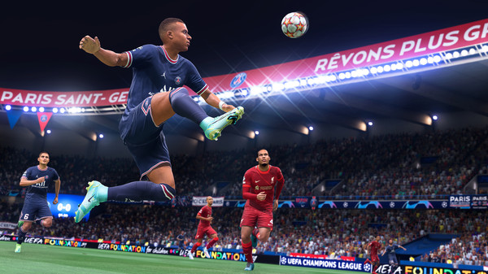
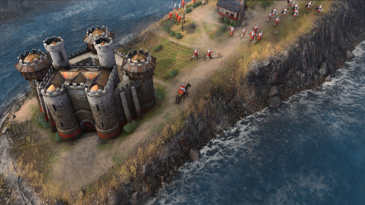

Ação

- Plataforma: São jogos baseados em plataformas, como o nome sugere. Foram especialmente populares nos consoles dos anos 1980 e 1990. Neles, correr, pular e cair fazem parte primordial da ação. São exemplos do subgênero os conhecidos Super Mario Bros, Donkey Kong e Sonic;
- Shooter (ou Jogos de Tiro): Nesses títulos, armas são peças-chave, já que resolvem boa parte dos confrontos do game. Aqui, há ainda duas principais perspectivas: a do FPS (First Person Shooter, em inglês, ou Tiro em Primeira Pessoa, em português) e TPS (Third Person Shooter, que é Tiro em Terceira Pessoa, em PT-BR). No primeiro exemplo, o jogador não enxerga seu personagem, apenas suas ações. Já no segundo, é possível visualizar o avatar em ação. São exemplos desse subgênero Call of Duty, Battlefield e Halo (para FPS), e Fortnite e Gears of War (para TPS);
- Luta: Aqui, o foco é no embate entre duas figuras. Geralmente, ele ocorre no corpo a corpo. Em sua grande maioria, esse tipo de game possui diversos personagens, cada um ostentando habilidades e funções distintas. São exemplos, aqui, os populares Mortal Kombat, Street Fighter e Tekken;
- Beat-em up: Esses são jogos que também focam no combate, mas, aqui, os inimigos são divididos em hordas. Diferentemente dos games de luta, no Beat 'em up, os jogadores não enfrentam um único oponente, mas sim vários. São exemplos Scott Pilgrim vs. The World, Castle Crashers e Bayonetta;
- Furtivo: Neste gênero, os jogos dão ênfase à estratégia e precisão para resolver desafios. São exemplos conhecidos desta categoria os games Dishonored, Metal Gear e Splinter Cell;
- Sobrevivência: Aqui, os jogadores precisam criar estratégias para sobreviver, como desenvolver armas, construir casas e caçar animais, por exemplo. São exemplos Ark: Survival Evolved, Green Hell e The Forest;
- Rítmico: Nesses games, a música é o principal elemento, e praticamente não há elementos daquela ação tradicional, que envolve combates e brigas. Guitar Hero, Just Dance e Dance Dance Revolution são os principais exemplos.
Aventura

- Horror e Sobrevivência: Normalmente, jogos desse gênero reúnem traços do estilo sobrevivência e do horror. Neles, os jogadores possuem recursos limitados, como armas e munições. São exemplos Resident Evil, Amnesia e Dead by Daylight;
- Metroidvania: Aqui, a história do game não é linear. Por isso, os jogadores precisam, eventualmente, descobrir habilidades, armas, aliados ou itens para avançar em alguns cenários. Dessa forma, novos locais são desbloqueados conforme o player progride. Ori and the Blind Forest, Hollow Knight e Dead Cells são os principais exemplos.
RPG (Role-Playing-Games)

- RPG de Ação: Esse gênero mistura elementos dos jogos de ação e aventura. Sua principal característica são os combates em tempo real. São exemplos aqui Cyberpunk 2077, Dark Souls e Fallout;
- MMORPG: A maior característica desse gênero é a presença de diversos usuários no mesmo servidor. Usualmente, os jogadores compartilham objetivos similares. World of Warcraft, Final Fantasy e Tera são exemplos desta categoria;
- Rouguelikes: Aqui, é usual que as mortes de gameplay sejam permanentes – ou seja, quando morre, o jogador retorna ao início do jogo. Outras características envolvem a geração de níveis aleatórios e a repetição como forma de aprimorar as habilidades do seu avatar. São exemplos Dead Cells, Hades e Rogue;
- RPG Sandbox: São RPGs em "mundos abertos", em que jogadores podem vasculhar um ambiente gigantesco em busca de novas aventuras e missões. É uma experiência mais envolvente, devido ao número de afazeres e riqueza de detalhes. The Elder Scrolls V: Skyrim, The Witcher 3: Wild Hunt e New World são os principais exemplos do mercado atualmente.
Simulação

- Simulação de Construção e Gestão: Normalmente, aqui, os jogadores são colocados para administrar uma cidade do zero. Os usuários têm que construir ruas, casas, escolas, departamentos de polícia, estações de tratamento de água e outros edifícios, para ganhar mais experiência. São exemplos SimCity, Tropico 4 e Cities Skylines;
- Simulação de Vida: Como o próprio nome diz, os jogadores conseguem simular toda uma vida no ambiente virtual. Em alguns jogos, é possível alterar as reações dos personagens, além de casar, trocar de empregos e muitas outras atividades presentes na vida real. The Sims, Habbo e BitLife são exemplos desse subgênero;
- Simulação de Veículos: Nesta categoria, estão presentes todos os games que simulam veículos, sejam estes terrestres, como carros e caminhões, aéreos, como aviões e helicópteros, ou marítimos, como navios e submarinos. Os principais exemplos são Microsoft Flight Simulator e Euro Truck Simulator.
Puzzle e Party Games

- Puzzle: Exige que os jogadores busquem soluções para resolver enigmas. A mecânica desse gênero pode ser bastante variada, e se estende desde a resolução de problemas de lógica até perguntas diversas. Portal é um exemplo desse gênero.
- Party Games: Por outro lado, embora sejam também considerados uma espécie de puzzle, aderem aos mecanismos do gênero anterior em partidas multiplayer, como é o caso da série Mario Party. Fall Guys e Pummel Party são exemplos da categoria.
Esportes

- Esportes: O gênero simula esportes da vida real, como futebol, vôlei, golfe, tênis e basquete. Jogos de corrida ou de boxe também se encaixam nessa categoria. Enquanto alguns títulos buscam recriar o cenário esportivo com fidelidade, outros preferem satirizar ou dar toques de fantasia aos games, como ocorre em Rocket League, por exemplo, em que os players utilizam carros para jogar futebol. FIFA, Forza e Madden NFL são nomes conhecidos da categoria.
Estratégia

- RTS: Esse é um dos subgêneros mais antigos dos games. Aqui, há o embate em tempo real entre players e IA, ou entre jogadores. A ação se contrapõe ao estilo baseado em turnos, como acontece no jogo Civilization. Além do manuseio de recursos e mapas, outra característica do modo é a câmera vista de cima para baixo. São exemplos Starcraft, Age of Empires e Command & Conquer;
- Multiplayer online battle arena (MOBA): Embora se inspire em muitos elementos do subgênero anterior, uma das principais diferenças entre MOBA e RTS é o manuseio de um único personagem no MOBA. No RTS, os jogadores geralmente constroem comunidades ou controlam mais de um avatar. A câmera também é, geralmente, de cima para baixo, e o trabalho em equipe é essencial. League of Legends, DotA 2 e Smite são os principais exemplos.